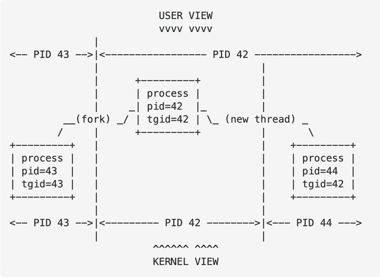

參考資料：
https://elixir.bootlin.com/linux/latest/source/include/linux/sched.h#L1612
https://stackoverflow.com/questions/9305992/if-threads-share-the-same-pid-how-can-they-be-identified
判斷TGID(Thread Group ID)
if (task_tgid_vnr(current) != current->tgid) {
// in container
}
TGID
